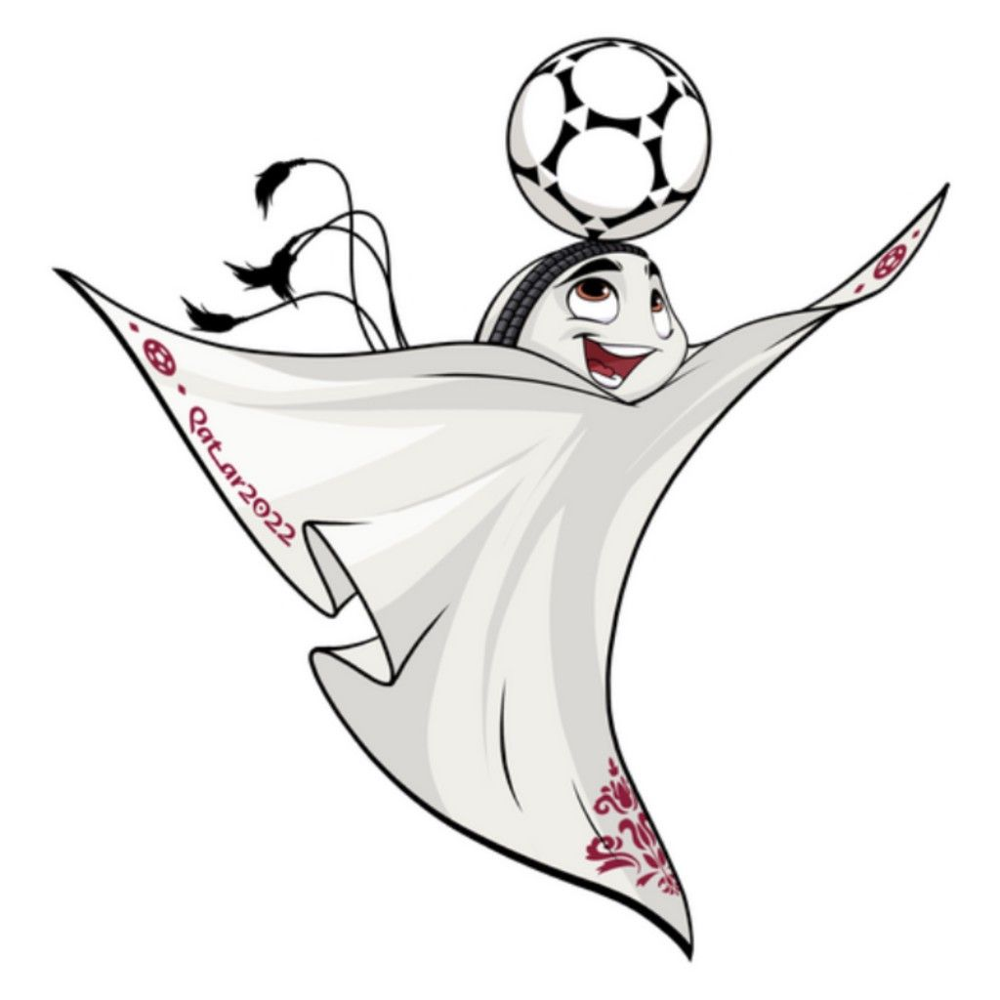
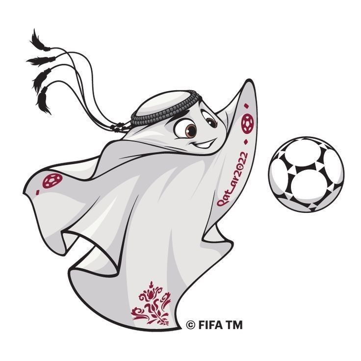

La mascota oficial del Mundial de Qatar 2022 se llama La’eeb. ⚽
El nombre La’eeb viene del árabe y significa:
“Jugador súper habilidoso”o también “el jugador talentoso”. Cómo es la mascota
La’eeb tiene una apariencia muy original: Parece una tela blanca flotante, inspirada en el tradicional pañuelo árabe llamado ghutra.Tiene ojos y una sonrisa divertida.Representa alegría, energía y amor por el fútbol.

Es alegre y divertida.Motiva a las personas a creer en sí mismas.Le encanta el fútbol y anima a todos los equipos.Según la FIFA, viene de un “mundo de mascotas”.
La’eeb fue creada para:
La’eeb es una de las mascotas más diferentes de los mundiales porque no es un animal, sino un personaje inspirado en la cultura de Qatar.
